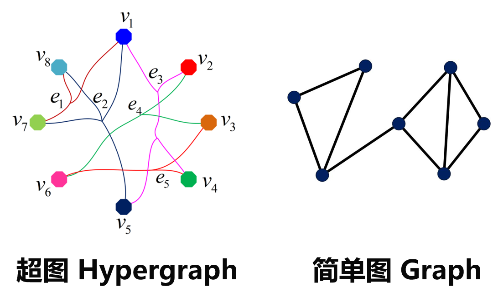
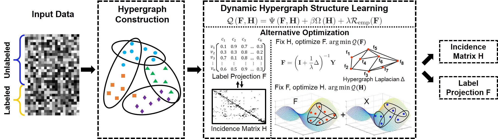
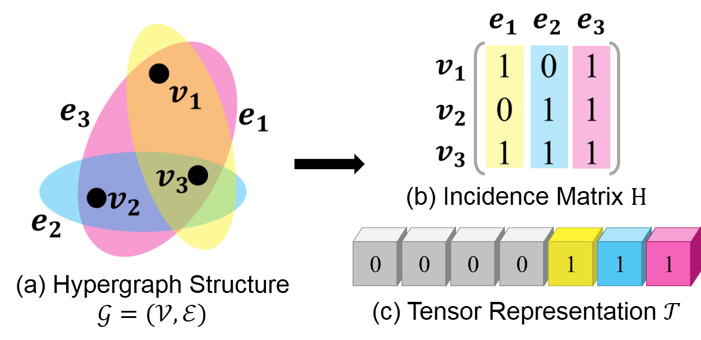
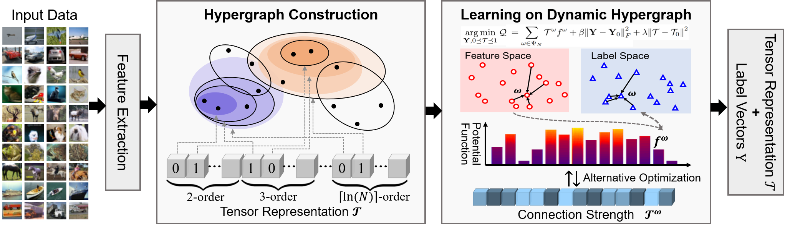
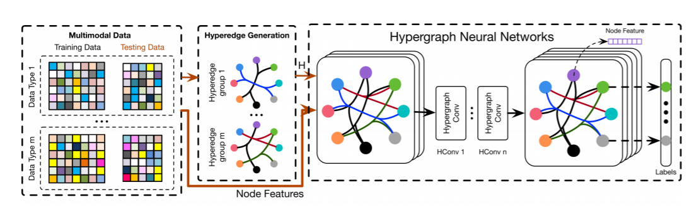

在社交网络、生物信息、视觉处理等任务和应用中，数据之间往往存在着复杂关联，分析数据间的复杂关联对于分类、分割、识别等任务有着重要意义。现实世界中，由于数据往往存在着噪声、不完备、动态等问题，应用环境的复杂化带来数据关联建模的困难，传统静态关联结构表示难以描述复杂数据关联，亟需具有更好适应性的动态数据关联建模方法。针对数据的复杂关联建模难题，我们采用超图结构进行数据复杂关联建模，提出了超图动态学习方法和超图神经网络。与传统的超图学习方法不同，这些方法具备更好的数据适应性，从而可以获得更佳的数据建模及分析性能。
超图结构是今年受到广泛关注和应用的一种复杂关联建模方法，他是简单图的拓展。在超图中，每个顶点代表一个样本，超边表示样本间的关联，与简单图不同的是，一条超边可以连接多个顶点，因此超图可以表示数据的复杂高阶关联。基于超图结构的学习方法可以认为是在超图结构上进行标签传播的过程，超图上连接比较紧密的点应该有相似的标签，距离较远的点标签则应该不同。超图学习方法在多媒体推荐、图像分割、视觉追踪等任务上都有着广泛应用。需要注意的是，在已有的研究工作中，超图结构代表了数据间的关联性，在学习过程中起到了决定性的作用。一个好的超图结构可以准确地建模数据间的关联性，从而得到更好的分类性能，而一个不好的超图结构则会得到相反的结果。因此如何从数据建立一个好的超图结构是一个至关重要的问题。

Fig 1. 超图 vs 简单图
传统的建立超图结构的方法包括基于k近邻建图、基于稀疏表示建图等方法，这些方法根据数据的特征表示或者稀疏表示建立静态超图结构，在之后的超图学习过程中超图结构保持不变。显然，这种静态超图结构并不能保证是最优的。也有方法在超图学习的过程中调整超边的权重，因为不同的连接可能有不同的重要性。然而，这种调整并不能完全修复不合适甚至错误的连接，因此对性能的提升微乎其微。
为了更好地建模数据之间的复杂关联，我们提出了动态超图结构学习方法，其基本思想是在传统的超图学习的过程中不断更新优化超图结构。具体来说，给定部分有标签的数据，我们的目标是学习得到更优化、更适合数据的超图结构，以更好地表征数据之间的高阶关联，同时得到标签映射矩阵，实现无标签数据的分类。提取数据特征后，我们首先建立初始超图结构来表征数据关联性，这里使用基于k近邻的建图方式。然后提出对偶优化框架，同步学习标签映射矩阵及超图结构。我们同时考虑了标签空间和特征空间的数据关联性，以实现超图结构的动态更新。

Fig 2. 动态超图结构学习框架图
在已有的工作中，超图往往通过邻接矩阵表示。邻接矩阵的表示形式有以下三个问题：1.当超图结构在动态演变时，其超边数和超边权重是在不断变化的，而邻接矩阵在动态超图结构学习过程中的维数是固定的，并不能很好地表示超图结构的动态更新。2.基于邻接矩阵的超图结构学习方法时间复杂度和空间复杂度都非常高。3.基于邻接矩阵的超图结构学习方法的目标函数是非凸的，现有算法难以有效求得最优解。针对这几个问题，我们提出了超图结构的张量表示，来构建数据的完全阶关联。

Fig 3. 超图的邻接矩阵表示 vs 张量表示
我们进一步提出了基于张量表示的动态超图学习算法，与已有方法相比，该模型的目标函数是双凸的，可以通过交替迭代算法有效求得最优解。我们在四个数据集上进行了实验，结果证明我们的方法可以有效提高准确率，同时将速度提升1700多倍。

Fig 4. 基于张量表示的动态超图学习框架图
深度神经网络相比与传统算法在结构规则的数据（如：图片，视频等）取了举世瞩目的结果。然而面对非结构化数据，如图结构，并不能直接使用经典的卷积神经网络。虽然图网络的出现可以在一定程度上解决非结构化数据学习的问题，但是现有的图网络都被只能建模成对的连接关系，这极大的限制了现有图网络的建模和学习能力。

Fig 5. 超图神经网络框架图
因此，针对非规则的非成对连接的高阶数据关联，我们提出使用超图神经网络去表征和学习。相比与图结构，超图结构有天然的建立高阶关联的能力，并且面对多模态数据的时候，超图可以直接通过拼接不同模态的超图关联矩阵达到目的。给定原始高阶关联的原始数据，我们首先在其上建立多组不同模态的超边，然后将不同模态的超边拼在一起构建全局的超图结构。全局超图结构与节点特征一起输入到超图神经网络中去做节点的预测。